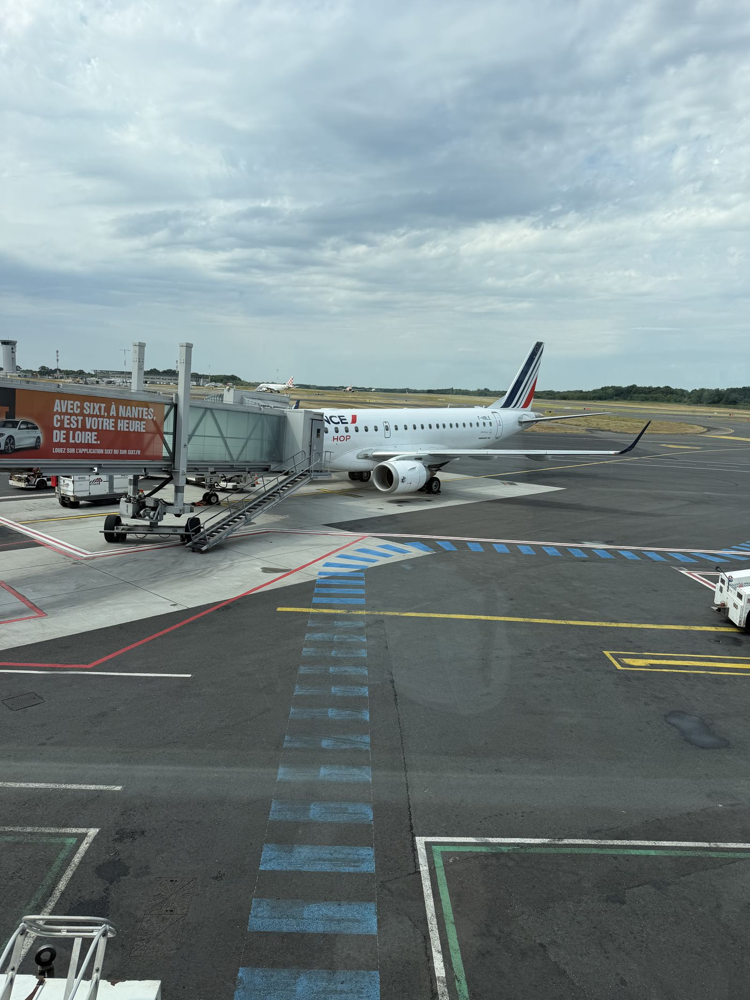
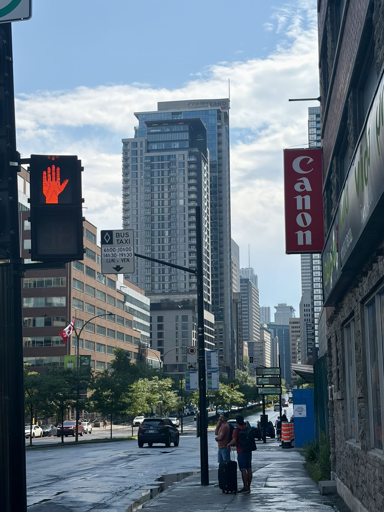
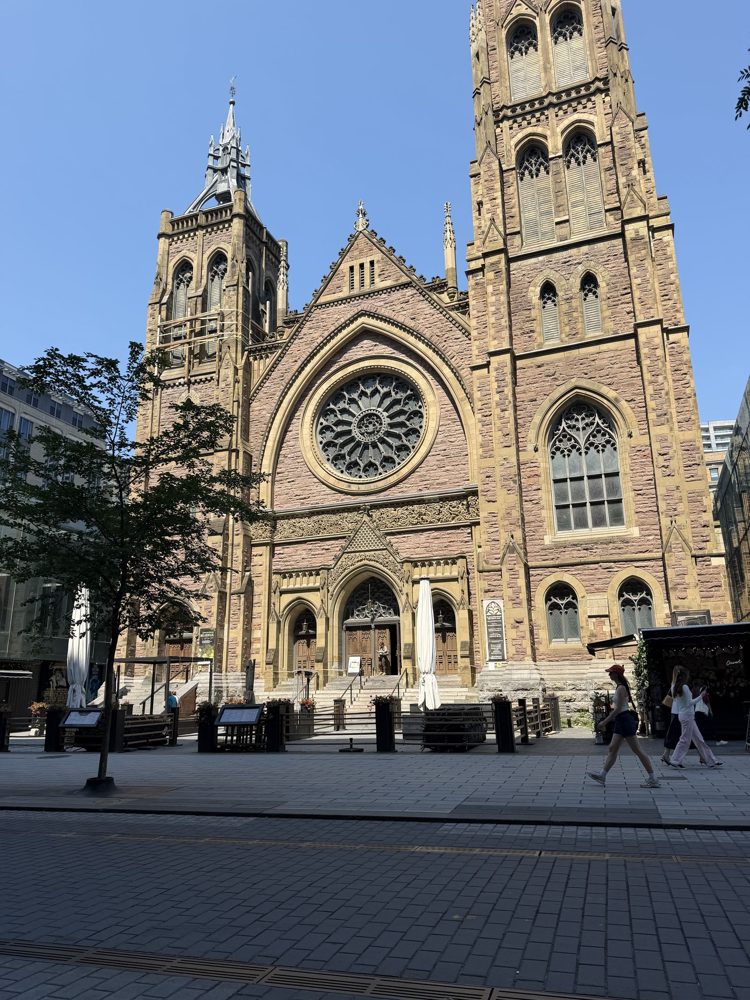
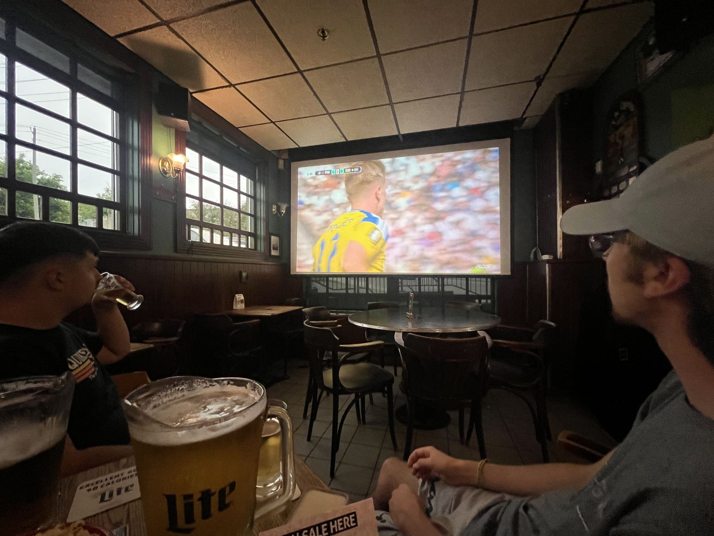
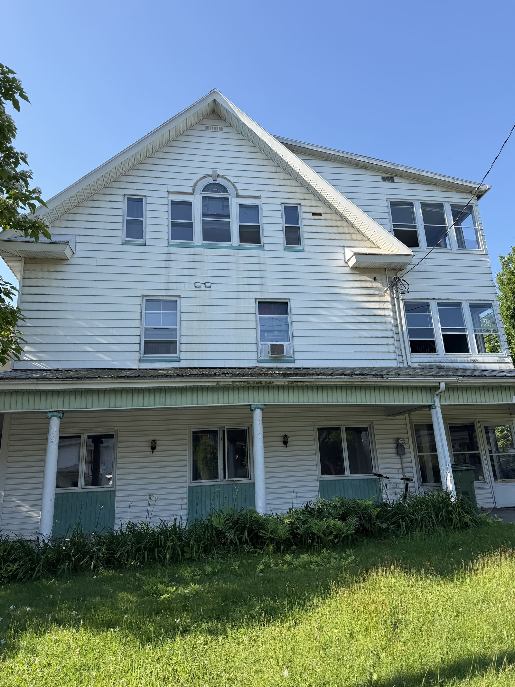
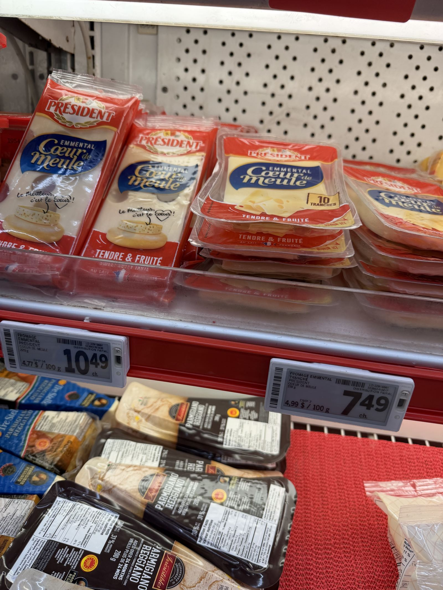

Semaine 1 : le grand départ
Le décollage
Le 27 juin, 10h, aéroport de Nantes. Direction Amsterdam avec Thibault pour notre escale, avant de décoller à 15h20 vers Montréal avec KLM.



Première petite galère à l'arrivée : à cause d'un problème de communication entre la compagnie et l'aéroport, on a dû patienter une heure dans l'avion en attendant qu'un bus vienne nous débarquer sur le tarmac. Rien de grave, mais ça calme.
Passage par la douane et l'immigration, où j'ai récupéré la fiche visiteur — le document le plus important pour entrer au Canada en tant que stagiaire qui n'a pas besoin de permis de travail. Atterrissage à 16h30, montée dans le taxi à 19h10, direction notre hôtel à Montréal avec Thibault, où l'on a retrouvé Victor, Thomas et Killian.
Premiers pas à Montréal

Le soir même, direction un resto de burgers pour reprendre des forces, tout en découvrant la ville. Le lendemain, on a continué la visite jusqu'à 16h30, avant de prendre un bus pour Sherbrooke où nous attendait notre logement.


Petit clin d'œil culturel : la Coupe du Monde 2026 se joue en partie en Amérique du Nord, et l'ambiance se ressentait déjà dans les rues de Montréal.

Direction Sherbrooke
Notre logement pour cinq n'étant disponible qu'à partir du 1er juillet, les propriétaires ont eu la gentillesse de nous loger gratuitement du 28 juin au 1er juillet dans un appartement de trois chambres. Un vrai coup de pouce pour bien démarrer.


Le choc des courses
Une fois installés, direction le supermarché pour faire les premières courses — et première vraie claque culturelle : les prix des produits « à la française » sont nettement plus élevés qu'en France, et honnêtement, le reste ne donne pas franchement envie au premier coup d'œil. Un classique du choc culturel alimentaire qu'on nous avait prévenu, mais qu'il faut vivre pour vraiment comprendre.
